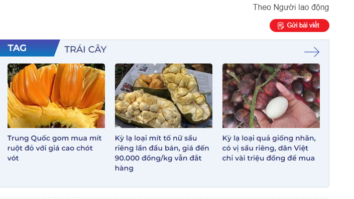

ϟ SỰ KIỆN NÓNG
Lý do khiến lựu đỏ, nho mẫu đơn... ngày càng rẻ
Với giá ngày càng rẻ, trái cây ngoại ngày càng được tiêu thụ phổ biến trên thị trường Việt Nam
| Kỳ lạ loại quả giống nhãn, có vị sầu riêng, dân Việt chi vài triệu đồng để mua | |
| Lựu Trung Quốc giá 7.000 đồng/kg la liệt chợ | |
| Rộ trend rau quả màu socola, ăn sống như trái cây |
Những năm trước đây, để thưởng thức những quả lựu to, đỏ, ngọt lịm và mọng nước, người tiêu dùng phải bỏ ra số tiền 400.000 – 500.000 đồng/kg để mua hàng xách tay thì nay chỉ cần bỏ ra khoảng 100.000 đồng là có thể mua được những sản phẩm với chất lượng tương tự.
Hay như nho mẫu đơn, từng có giá bạc triệu mỗi kg nay chỉ còn một nửa với sản phẩm cùng xuất xứ hoặc thấp hơn ¼ với loại cùng giống nhưng trồng tại Trung Quốc. Tại TP HCM, một số nơi đang bán nho mẫu đơn giá chỉ 200.000 – 400.000 đồng/kg.
Lựu đỏ được bán trên đường phố TP HCM
Anh Trần Linh, phụ trách bộ phận kinh doanh một công ty nhập khẩu trái cây tại quận Bình Thạnh, cho biết trái cây nhập khẩu ngày càng rẻ do có nhiều doanh nghiệp tham gia và lựa chọn những dòng hàng vừa túi tiền để đưa về nước. Ví dụ, các loại táo nhập từ châu Âu có thuế 0% các doanh nghiệp thường chọn loại có kích cỡ nhỏ với giá thấp, vận chuyển bằng đường tàu chi phí thấp nên về Việt Nam bán với giá rất rẻ.
Theo đại diện một chuỗi bán lẻ trái cây tại TP HCM, các nhà nhập khẩu thường phải cam kết số lượng nhập khẩu từ đầu mùa.
"Nhưng năm nay thị trường rất yếu nên các nhà nhập khẩu buộc phải giảm giá để ra hàng vì trái cây không thể tồn kho lâu" – đại diện chuỗi bán lẻ này giải thích.
Trước đó, đại diện Hiệp hội Cherry Mỹ tại Việt Nam cũng xác nhận lượng nhập khẩu về Việt Nam nhiều hơn do trúng mùa và vận chuyển bằng đường biển nên chi phí thấp.
.jpg)
Táo cỡ nhỏ có giá rẻ
Ông Đặng Phúc Nguyên, Tổng Thư ký Hiệp hội Rau quả Việt Nam, thông tin sơ bộ 10 tháng đầu năm Việt Nam nhập khẩu lượng rau quả trị giá 1,6 tỉ USD, giảm 4,1% so với cùng kỳ năm ngoái. Tuy nhiên, đây chỉ là tính về giá trị còn xét về số lượng chắc chắn sẽ nhiều hơn trước vì đơn giá giảm.
"Trái cây nhập khẩu ngày càng nhiều là tất yếu khi Việt Nam ký nhiều hiệp định thương mại tự do với các nước, thuế nhập khẩu về 0%. Khi trái cây Việt Nam xuất khẩu nhiều hơn thì thị trường nội địa cũng đón nhận nhiều trái cây ngoại. Quan trọng là ngành hàng rau quả vẫn xuất siêu" – ông Nguyên nói.
Trong khi đó, bà Tuyết Nga, chủ một cửa hàng trái cây tại quận 12 (TP HCM), nhận xét thời gian gần đây việc kinh doanh trái cây không còn phân chia theo nhập khẩu – nội địa mà chủ yếu phân chia theo mùa và chất lượng sản phẩm.
"Tôi thấy nhiều công ty chuyên nhập khẩu trái cây nay cũng bán cả trái cây trong nước miễn là đáp ứng tiêu chuẩn và thị hiếu người tiêu dùng. Như hiện tại là mùa cam Canh miền Bắc, giá bán xấp xỉ 100.000 đồng/kg đang bán rất chạy chứ không nhất thiết phải là cam Úc hay Mỹ" – bà Nga nhận xét.
